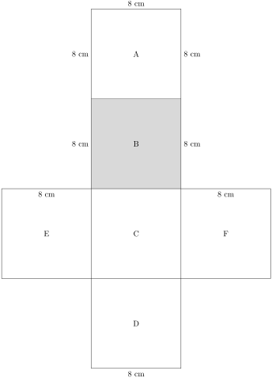
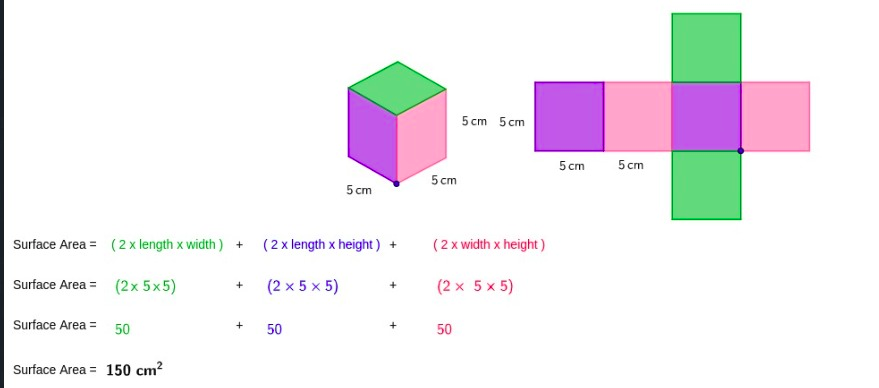

Subsection 2.7.1 Surface Area of Prisms
Specific Learning Outcomes
- Strand
2.0 Measurements and Geometry
- Sub-Strand
-
Determine the surface area of prisms, pyramids, cones, frustums and spheres
-
Explore the use of the surface area and volume of solids in real-life situations
Activity 2.7.2.
A cube is unfolded to a net made up of 6 identical squares .

\(\textbf{Materials needed.}\)
-
Paper Folds of multiple cubes.
-
-
🔹 Measure the side length (s) of one smaller square on a face.
🔹 Count how many squares make up one face for example, a 3x3 or 4x4
🔹 Count how many squares make up the cuboid.
-
Discuss in your groups what will happen if the surface area doubles in size.
🔹 Why do bigger cubes have more surface area?
\(\textbf{Key Takeaway}\)
🔹 A prism is a Geometric object with two identical, parallel bases and straight sides connecting them.
🔹Examples of right prisms are cylinders, rectangular prisms, cubes and triangular prisms.
\(\textbf{Types of Prisms}\text{:}\) Rectangular and cube prisms, Triangular Prisms and Cylinders.
\(\textbf{Surface Area of a cube}\)
Observe the cuboid below whose side is 8cm.
Example 2.7.1.
(a). Work out the surface area of the cube whose side is 8cm.
Solution.
(b).The surface area of the cube.
The area of one face.
\begin{align*}
= \amp 8 \,\text{cm} \times 8 \, \text{cm} \\
= \amp 64 \, \text{cm}^2
\end{align*}
There are 6 faces therefore the surface area of the cube is;
\begin{align*}
= \amp 6 \, \times 64 \, \text{cm}^2\\
= \amp 384 \, \text{cm}^2
\end{align*}
The surface area of the cube is 384
\(\text{cm}^2\)
Activity 2.7.3.
\(\textbf{Surface area of a Cuboid}\)
View the net of a cuboid in order to understand how to find the surface area of the cuboid.

Activity 2.7.4. Brick wall construction..
\(\textbf{Materials needed;}\)
🔹 In your group build up a cuboid wall by stacking similar small bricks to a desired height.
🔹 Add more columns and rows until the wall is entirely covered with bricks and it resembles a box.
🔹 Count the number of bricks that you used and record.
🔹 Calculate the surface area of the cuboid using the formula:
\(2(\text{l} \times \text{w}) + 2(\text{l} \times \text{h}) + 2(\text{w} \times \text{h})\)
🔹 Compare their results. What do you notice? Share with your group members and discuss why builders need surface area e.g. for painting or tiling, building up walls and houses etc.
\(\textbf{Key Takeaway}\)
A cuboid is also called a rectangular Prism.
\(\textbf{Rectangular Prism;}\) It has a rectangle at its base. A cube is a rectangular prism with all sides of equal length.
The surface area of a cuboid is the total area of all six faces of the cuboid.
When learning about area, we calculated the surface area of a cuboid. Since the opposite faces of a cuboid are identical, the
\(\textbf{surface area of a cuboid}\) can be calculated by finding the
\(\textbf{area of each face}\) and
\(\textbf{then adding them together}\text{.}\)
In this section, we will calculate the surface area of a cuboid from their nets.
Example 2.7.2.
Find the surface area of the following rectangular prism:
Solution.
Sketch and label the net of the prism.
Find the areas of the different shapes in the ne
\begin{align*}
\text{large rectangle} = \amp \text{ perimeter of small rectangle} \times \text{length} \\
= \amp (3+8+3+8)\text{cm} \times 14\text{cm} \\
= \amp 22\text{cm} \times 14\text{cm} \\
= \amp 308\text{cm}^2
\end{align*}
\begin{align*}
2 \, \text{small rectangle} \amp = 2(8 \text{cm} \times 3\text{cm} ) \\
= \amp 2(18) \,\text{cm} \\
= \amp 36\text{cm}^2
\end{align*}
Find the sum of the areas of the faces
\begin{align*}
\text{large rectangle} + \text{small rectangle} = \amp (308 + 36)\text{cm}^2 \\
= \amp 344 \, \text{cm}^2
\end{align*}
The surface area of the rectangular prism is
\(344 \, \text{cm}^2\)
1. A rectangular cardboard box has dimensions of 10 cm by 8 cm by 5 cm. Calculate its total surface area, which represents the total material required to construct the box.
2. (a) A gift shop sells a rectangular gift box with dimensions 30 cm by 20 cm by 12 cm. If the shop owner wants to wrap the entire box, including all its faces, calculate the minimum amount of wrapping paper needed. If the wrapping paper is sold in rolls of 1 square meter, how many rolls would be needed to wrap 50 boxes?
(b) A gift box is being wrapped for a special occasion, and it has dimensions of 20 cm in length, 12 cm in width, and 10 cm in height. Calculate the exact amount of wrapping paper required to cover the entire box without any overlap.
3. A metal box used for shipping measures 25 cm by 15 cm by 10 cm. Compute the total amount of sheet metal required to construct the box, assuming no material is wasted.
4. The total surface area of a cuboid is given as 484 cm² and two of its dimensions are 8 cm and 6 cm. Determine the missing height (h) of the cuboid.
5. A cuboidal storage room has dimensions of 4 m by 5 m by 3 m. If the walls, floor and ceiling need to be painted, determine the total area that will be covered with paint.
6. A rectangular classroom has a length of 10 meters, a width of 8 meters and a height of 4 meters. The four walls and the ceiling need to be painted, but the floor is covered with tiles. If one litre of paint covers 5 square meters, calculate the total area to be painted and determine the amount of paint required.
7. A company is designing a cuboidal packaging box with dimensions 25 cm by 15 cm by 10 cm. The company wants to reduce costs by using the minimum possible material while ensuring the entire box is covered. Calculate the total surface area of the box and determine the cost of producing 1,000 such boxes if the material costs Ksh. 135 per square centimeter.
8. A swimming pool in the shape of a cuboid has dimensions 12 meters in length, 5 meters in width, and 3 meters in depth. The interior of the pool, including the bottom and the four walls, needs to be covered with waterproof tiles. If each tile has an area of 0.25 square meters, determine the total number of tiles required to completely cover the pool’s surface.
9. A metal storage container is shaped like a cuboid with dimensions 6 m by 4 m by 3 m. The container needs to be insulated on all its surfaces except for one of the 6 m by 4 m walls, which serves as the entrance. If the insulation material costs Ksh.295 per square meter, determine the total cost of insulating the container.
Checkpoint 2.7.3.
Checkpoint 2.7.4.
Checkpoint 2.7.5.
1.A large wooden dice with sides measuring 12 cm each is to be painted on all six faces. If one milliliter of paint covers 5 cm², calculate the total amount of paint required to cover the dice completely.
2. A cube has a side length of 25 cm. If the cost of the cardboard material is Ksh.110 per square centimeter, determine the total cost of making one box. How much would it cost to produce 500 such boxes?
3. A decorative gift box is shaped like a cube with each side measuring 18 cm. To wrap it completely, calculate the total area of wrapping paper needed. If the shop sells wrapping paper in sheets of 1 square meter, how many sheets will be required to wrap 20 such gift boxes?
4. A small storage room is designed in the shape of a cube with an edge length of 4 meters. The floor, four walls, and ceiling all need to be tiled. If each tile covers an area of 0.5 square meters, determine the total number of tiles required to fully cover the interior of the room
5. A cube-shaped metal water tank with a side length of 2.5 meters is being coated with a protective layer on all its surfaces to prevent rusting. If the coating material costs Ksh.150 per square meter, calculate the total cost to coat the entire tank.
6. A pet shop wants to construct a cube-shaped aquarium with a side length of 1.2 meters. The aquarium needs to be made entirely of glass, including the base and all four vertical sides,
\(\textbf{but the top will remain open}.\) If the cost of glass is Ksh. 750 per square meter, find the total cost of constructing the aquarium.
7. A company is designing a cube-shaped promotional stand with a side length of 5 meters. The stand will be covered with high-quality wallpaper on all six faces. If one roll of wallpaper covers 10 square meters, determine the number of rolls required to fully cover the cube.
Surface Area of a Triangular Prism.
Activity 2.7.5.
Formula of the surface area of a triangular prism is the sum of:
1. Two triangular bases
\begin{align*}
\text{Area of a triangle} = \amp \frac{1}{2} \times \text{base} \times \text{height} \\
\text{Total area for two triangles} \\
= \amp 2 \times (\frac{1}{2} \times \text{base} \times \text{height}) \\
= \amp b \times h
\end{align*}
2.Two rectangular lateral faces
The three faces depend on the perimeter of the triangular base and the prism length \(L\)
\begin{align*}
\text{Lateral Area} = \amp \text{Base Area} \times \text{Lateral Area} \\
=\amp (b \times h) + (\text{Perimeter} \times L)
\end{align*}
Total Surface Area formula:
\begin{align*}
S.A =\amp \text{Base Area} \times \text{Lateral Area}
\end{align*}
\(\textbf{Key Takeaway}\)
\(\textbf{ Triangular Prism;}\) It has a triangle at its base.
A triangular prism is a geometric object with two identical triangular bases and three rectangular lateral faces. Its surface area is the total area of all its faces, measured in square units (cm², m², etc.).
Example 2.7.6.
Find the Surface area of the triangular prism with a slant height of 5 cm, height of the triangular prism 12cm and a base of 8 cm.
Solution.
Step 1: Find the area of the base.
The triangle has a slant height of 5 cm and base 8 cm. Using pythagorean relationship height is:
\begin{align*}
= \amp \sqrt{(5\,\text{cm})^2 - (4\, \text{cm})^2}\\
= \amp \sqrt{25 \, \text{cm} -16\, \text{cm}} = 3\, \text{cm}\\
\text{area of a triangle} = \amp \frac{1}{2}\times b \times h\\
= \amp (\frac{1}{2} \times 3\, \text{cm} \times 8 \,\text{cm} ) \times 12\, \text{cm} \\
= \amp 144 \,\text{cm}^2
\end{align*}
Step 2: Multiply the area of the base by the height of the solid to find the volume
\begin{align*}
\text{volume} = \amp \text{area of base} \times \text{height}\\
= \amp \frac{1}{2} b \times h \times H\\
= \amp 48 \, \text{cm}^2 \times 12 \, \text{cm} \\
\amp 576 \, \text{cm}^3
\end{align*}
The surface of the triangular prism is
\(576 \, \text{cm}^3\text{.}\)
1.If a litre of paint covers an area of
\(2 \text{m}^2\text{,}\) how much paint does a painter need to cover:
a) A rectangular swimming pool with dimensions 4 m by 3 m by 5 m (the inside walls and floor only);
b) the inside walls and floor of a circular reservoir with diameter 7 m and height 5 m
2. A triangular prism has a triangular base of 13 cm and the height of the prism 9 cm. Calculate the total surface area .
3. A prism is constructed with a triangular base of 8 cm height of 12 cm.. Determine the area of the triangular base, then use the given dimensions to compute the total surface area.
4. The total surface area of a triangular prism is measured as 360 cm² and its height is 20 cm. If the triangular base has sides measuring 9 cm, 12 cm and 15 cm, verify that this value is correct by calculating the surface area from scratch.
5. A bridge support structure has the shape of a triangular prism, with a base measuring 10 cm, 17 cm and 21 cm, and a height of 50 cm. Compute the total surface area, which will help determine how much paint is needed to coat its entire surface.
6. A glass showcase is designed in the shape of a triangular prism, with a triangular base of 5 cm, a height of 12 cm, and a prism length of 20 cm. If all faces are to be made of glass, calculate the total glass area required.
Checkpoint 2.7.7.
Checkpoint 2.7.8.
Checkpoint 2.7.9.
Checkpoint 2.7.10.
Checkpoint 2.7.11.